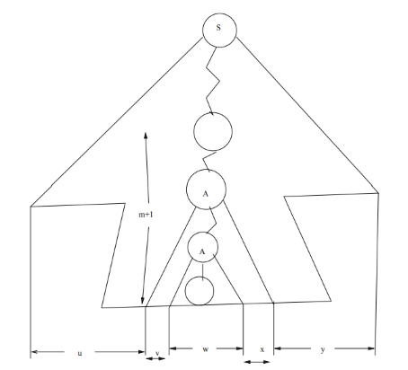

自动人形会梦见 NP 完全问题吗？
计算理论 (Theory of Computation) 当之无愧是计算机科学王冠上的明珠；考虑到我贫瘠的智商，以后估计不会朝 TCS 方向来走；但对这些优雅的理论有一个最基本的了解应当是 CS 学生的素养。
讽刺的是，你坑近二十年前就没有开设这门课了 [1]，只得留待交换来上。老师是印度人，口音很重，我听完整节课才明白他口中的「GEO」其实是「zero」。
完整的笔记和错题集归档在博客园，这里就留下一点比较精华的东西吧！
This article is a self-administered course note.
It will NOT cover any exam or assignment related content.
DFA & NFA
DFA (Deterministic Finite Automaton)
确定有限状态自动机：有向图，一个开始状态 (starting
state)，若干个接受状态 (accepting state)。边上带 label
用来标示转移。每个状态出度为 1 (出度为 0 的状态默认向
dead state 转移)。
NFA (Non-deterministic Finite Automaton) 非确定有限状态自动机：DFA 但每个状态出度可以大于 1。并且它的不确定性允许空转移 \(\epsilon\)-transition，即不带 label 的边。
NFA 与 DFA 在 language recognition 意义上等价。
- DFA 显然是出度为 1 的 NFA。
- NFA 转 DFA 稍微麻烦点：因为 \(|\delta(q,\alpha)|\geq 1\)，我们直接令 \(\delta_D(\{q\},\alpha)=\{\delta(q,\alpha)\}\)，把集合视为一个状态。重定义的转移 \(\delta_D\) 如下：\(\delta_D(Q,\alpha)=\{\cup_{q\in Q}\delta(q,\alpha)\}\)。这样，新 DFA 的状态数量要 exponentially more than 原 NFA。
什么是正则语言 (Regular Language) - 首先要知道什么是语言，语言就是满足某种规律的字符串集合 - 正则语言就是能被 DFA/NFA 识别的语言。
我们熟悉的正则表达式 (Regular Expression) 是一种可以描述正则语言规律的表达式，简单来说，就是用单个字符串 (表达式) 来表示字符串集合 (语言)。因此也可以这样说：正则语言是可以被正则表达式表示的语言。
符合直觉地，任意 DFA 可以转化为一个正则表达式；任意正则表达式可以转化为一个 \(\epsilon\)-NFA (具体 DP 方法见归档笔记)。
怎样把 DFA 化为最简形式 (minimization of DFA)，即，等价 DFA 中状态数最少的？
又是 DP。定义 \(f_{i,j}=1/0\) 为状态 \(i\) 与状态 \(j\) 是否 distinguishable。初始化：
- \(f_{s,t}=1\) where \(t\in T\)。显然起始状态与接收状态是可被空串 \(\epsilon\) 分辨的。
- \(f_{i,j}=0\) otherwise。
开始 DP，已知使用长度为 \(x\) 的字符串时分辨情况为 \(f\)，推出使用长度为 \(x+1\) 时的字符串时的分辨情况 (为了节省空间，这里 \(f\) 其实省略了长度维度 \(x\))。转移方程 \(f_{p,q}=1\) if \(\exists \alpha, f(\delta(p,\alpha),\delta(q,\alpha))=1\)。不断增加长度直到 \(f\) 收敛，我们就获得了所有的 indistinguishable pairs (被 \(f\) 标记为 0)；在原 DFA 中合并每一对不可分辨状态对即可。
Pumping Lemma for RL
Pumping Lemma (泵引理) 将会伴随整个计算理论课程，在这里我将首先介绍其 RL 版本。
若 \(L\) 是正则语言，那么存在某常数 \(n\) 使得对于任意长度 \(\geq n\) 的字符串 \(w\in L\)，我们都能找到一种方式将其分解为 \(w=xyz\)，并满足：
- \(y\neq \epsilon\)
- \(|xy|\leq n\)
- 对所有整数 \(k\geq 0\)，字符串 \(xy^kz\in L\)
这里 \(y^k\) 表示将子串 \(y\) 重复 \(k\) 次。
这应该是所有泵引理中最容易证明的一个了：考虑某个能够识别 \(L\) 的 DFA，令 \(n=|Q|+1\) (\(|Q|\) 为该 DFA 的状态数)。对于长度 \(\geq n\) 的某个 \(w\in L\)，根据鸽巢原理我们能够肯定至少存在一个状态 \(q_{rep}\) 被经过了两次。这意味着在转移过程中一定出现了某个环 (\(q_{rep}\) 作为该环的扭结)。我们令 \(y\) 等于这个环对应的字符串即可。
所有正则语言都满足泵引理，但也存在满足泵引理的非正则语言。因此泵引理常用来证否：若找到某个长度 \(\geq n\) 的字符串，不存在任意一种 \(xyz\) 的划分方式能使得对于所有 \(k\)，\(xy^kz\in L\)，那么 \(L\) 不是正则的。
PDA
PDA (Push Down Automata) 下推自动机是一种外置一个无限长的数据栈的有限状态自动机。转移条件不仅与当前读入的字符有关，也与栈顶元素有关。
转移 \((q,\gamma)\in \delta(p,a,X)\) 表示，当前状态为 \(p\)，栈顶元素为 \(X\)；此时读入字符 \(a\)；NPDA 能够 (DPDA 则是仅能) 转移至状态 \(q\)，且 \(X\) 从栈中弹出，\(\gamma\) 被压入栈中。
引入一种新的 notation，瞬时描述 (instantaneous description)。它是一个三元组 \((q,w,a)\) 表示当前状态为 \(q\)，剩余需要读入的字符串为 \(w\)，当前栈顶元素为 \(a\)。使用 \(\vdash\) (单步) 或 \(\vdash^*\) 进行转移。
上下文无关语言 (Context-Free Language) 是能够被 PDA 识别的语言。任意 CFL 都能被上下文无关语法 (Context-Free Grammar) 表达，或者，更准确地说，生成。
PDA - CFL - CFG 的关系与 DFA - RL - RE 的关系近似。
同样的，对任意 CFG 都能构造一个等价的空栈 PDA 来识别，对任意 PDA 都能构造一个等价的 CFG 生成相同的语言。证明见归档笔记，利用了 NPDA 的非确定性。
CFG \(G\) 由四部分构成，\(V\) (变量，variables)，\(T\) (终止符，terminals)，\(S\) (起始符，start symbol) 与 \(P\) (生成规则，production rules，\(\to\))。
\(G\) 所生成的 CFL \(L(G)=\{w\in T^*|S\Rightarrow^* w\}\)。从起始符开始，根据若干生成规则不断转移 (引入变量，消去变量，引入终止符)，直至生成最终的字符串 (全由终止符构成，无法再生成)，这一过程被称为派生 (derivation)。显然，派生过程可以用一颗树来描述，该树被称为 CFG 的分析树 (parse tree)，或具体语法树 (concrete syntax tree)。
若同一个字符串存在两种派生方式 (存在两种形态有异的分析树)，我们说该语法是歧义的 (ambiguous)。
Chomsky Normal Form
乔姆斯基范式 (Chomsky Normal Form) 是一种特殊的 CFG 范式，它规定该 CFG 的分析树是一颗二叉树。从生成规则上看，乔姆斯基范式要求每一种生成规则都满足以下形式：
- \(A\to BC\) (\(A,B,C\) 均为变量 \(\in V\))
- \(A\to \alpha\) (\(A\) 为变量 \(\in V\)，\(\alpha\) 为终止符 \(\in T\))
任意 CFG 都能转化为乔姆斯基范式。
第一步：消除所有空生成 (\(\epsilon\) productions)，即 \(A\to\epsilon\) 这样的规则。
- 去掉所有的 \(A\to \epsilon\) 规则，并把 \(A\) 标记为空变量 (nullable variables)。
- 检查其他的规则，若规则 \(B\to s\) 中，\(s\) 包含空变量，则排列的 (permutation) 删去这些空变量。举个例子 \(S\to ASA\)，删去后产生四个新规则 \(S\to ASA|SA|AS|S\)。
第二步：消除所有单元生成 (unit productions)，即 \(A\to B\)，\(A,B\) 均为变量这样的规则。直接去掉所有的 \(A\to B\) 规则，如果有 \(B\to s\)，则添加 \(A\to s\)。
经以上两步，\(G\) 中所有的生成规则 \(A\to s\) 都表现成以下两种形式：
- \(|s|=1\)，此时 \(s\) 一定是单个终止符。
- \(|s|=|s_1s_2...s_n|=n\geq 2\)，\(s_i\) 是终止符或者变量。
第三步：把所有生成规则转化为 \(A\to BC\) 或 \(A\to \alpha\) 的形式。举例来说，给定 \(A\to s_1s_2...s_n\)，我们从 \(i=1\) 开始逐个进行拆解：
- 若 \(s_1\) 是变量，\(A\to s_1B_2\)
- 若 \(s_2\) 是变量，\(B_2\to s_2B_3\)
- 以此类推，若 \(s_i\) 是变量，\(B_i\to s_iB_{i+1}\)
- 若某个 \(s_i\) 是终止符，令 \(B_i\to Z_iB_{i+1}\)，其中 \(Z_i\to s_i\)
Pumping Lemma for CFL
来了！关于上下文无关语言 CFL 的泵引理。
若 \(L\) 是上下文无关语言，那么存在某常数 \(n\) 使得对于任意长度 \(\geq n\) 的字符串 \(z\in L\)，我们都能找到一种方式将其分解为 \(z=uvwxy\)，并满足：
- \(|vwx|\leq n\)
- \(vx\neq \epsilon\)
- 对所有整数 \(k\geq 0\)，字符串 \(uv^kwx^ky \in L\)
这一泵引理证明起来就有点复杂了。给定 CFG \(G=(V,T,P,S)\) 且 \(L(G)=L\)。令 \(m=|V|\) (变量数)，\(n=2^m\)。
考虑一个长度 \(>n=2^m\) 的字符串 \(z\in L\)，它的分析树中一定至少存在一条从根到叶的路径，其长度 \(\geq m+1\) (即使分析树是完全二叉树，此时深度最小，为 \(m+1\))。
考虑这一路径上的后 \(m+1\) 个变量 (从底部往上数)，根据鸽巢原理，其中至少存在一对同样的变量，记为 \(A\)。

见上图，我们按照这种方式进行分割 \(S\Rightarrow_G^* uAy\Rightarrow^*_G uvAxy\Rightarrow_G^* uvwxy\)。
- 条件一：\(A\) 是 \(S\) 的深为 \(m+1\) 的子树，其叶子数量 (\(|vwx|\)) 不会超过 \(2^m=n\)
- 条件二：\(A\) 子树非空，一定能保证 \(vx\neq \epsilon\)
- 条件三：既然有 \(A\Rightarrow_G^* vAx\) 且 \(A\Rightarrow_G^* w\)，先不断使用式一 \(A\Rightarrow_G^* v^kAx^k\)，再使用式二 \(v^kAx^k\Rightarrow_G^* v^kwx^k\)。于是有 \(S\Rightarrow_G^* uAy\Rightarrow_G^* uv^kwx^ky\)；既然该字符串能被 \(G\) 产生，它同样属于原 CFL \(L\)。
Turing Machine
来到最强大的通用计算模型图灵机 (Turing Machine) 了。
无限长的纸带 (tape)，读写头 (read-write head) 在该纸带上进行转移。转移方程如下：\(\delta(p,\alpha)=(q, \beta,L/R)\)。意义为：图灵机在状态 \(p\)，当前读到的字符为 \(\alpha\)；那么图灵机转移到状态 \(q\)，读写头将当前单元的字符 \(\alpha\) 更改为 \(\beta\)，读写头向左/右移动一个单元。
读写头若到达任意接受状态 (accepting state)，纸带上的字符串被视为接受。与 DFA/PDA 不同，图灵机不要求访问纸带上的所有字符 (前两个自动机均要求 consume 输入字符串的所有字符)。这一特性决定了图灵机可能在转移过程中陷入死循环，即，不停机 (halt)。
图灵机的瞬时描述 (instantaneous description)：\(x_0x_1...x_{n-1}qx_n...x_m\)。实际上就是把图灵机的状态 \(q\) 插入纸带的内容 \(x_0x_1...x_m\) 里！其实挺形象的。
图灵机存在许多变种：半无限带式图灵机 (semi-infinite tape TM)，多带图灵机 (multi-tape TM)，非确定性图灵机 (nondeterministic TM)；但它们在语言识别意义上均与单带确定性图灵机等价 (区别在于时空复杂度)。
通用图灵机 (Universal TM) 是能够识别通用语言 (Universal Language) \(L_u=\{(M,w):M\text{ accepts } w\}\) 的图灵机。输入模式为 \(M\#w\)。
这里要涉及一个概念，图灵机的编码 (coding scheme)。简单理解就是把图灵机编码成一个字符串；我们甚至可以通过遍历所有字符串来列举所有图灵机。
通用图灵机所做的只是 simulate \(M(w)\)，若 \(M\) 接受 \(w\)，通用图灵机也接受。
Decidability
几个概念。
- 递归可枚举语言 (Recursively Enumerable Language) 是能被图灵机识别的语言。
- 递归语言 (Recursive Language)，或可判定语言 (Decidable Language)，是能被图灵机识别，且在所有输入上都能停机的语言。
- 部分递归函数 (Partial Recursive Function) \(f\) — 很明显 TM 是一个函数，输入是 TM 处理前的纸带，输出是 TM 处理后的纸带 — 是能被图灵机计算，且该图灵机在 \(f\) 的定义域上停机，在 \(f\) 的定义域外不停机的函数。
- 递归函数 (Recursive Function) \(f\) — 是能被图灵机计算，且该图灵机在所有输入上都停机的函数。
显然，比起递归可枚举，递归是一个更强的约束。
一些有趣的结论：对角语言 (Diagonal Language) \(L_d=\{w_i:w_i\notin L(M_i)\}\) (注意，字符串可以被列举，图灵机的编码也可以被列举) 是 non-RE 语言。通用语言的补 \(\overline{L_u}=\{(M,w):M\text{ doesn't accept }w\}\) 也是 non-RE 语言。非空图灵机语言 \(L_{ne}=\{M:L(M)\neq \emptyset\}\) 是 RE 语言，但空图灵机语言 \(L_e=\{M:L(M)=\emptyset\}\) 是 non-RE 语言：这意味着我们无法判断一个给定的图灵机是否为空 (empty language problem)。
规约 (Reduction)：\(P_1\) 规约为 \(P_2\) (表记 \(P_1\leq_m P_2\)) 若存在某个递归函数 \(f\) 满足 \(x\in P_1\) 当且仅当 \(f(x)\in P_2\)。规约关系说明了：
- 如果 \(P_2\) 是递归的，\(P_1\) 也是递归的
- 如果 \(P_2\) 是递归可枚举的，\(P_1\) 也是
- 如果 \(P_1\) 是不可判定的，\(P_2\) 也是
- 如果 \(P_1\) 不是递归可枚举的 (non-RE)，\(P_2\) 也不是
一开始我是把这个规约按照 COMP3357 中的那个规约理解的，后来发现两者不太一样。见后文关于 Karp Reduction 与 Cook Reduction 的讨论。
莱斯定理 (Rice's Theorem)：递归可枚举语言的所有非平凡性质 (non-trivial property) 都是不可判定的。
- 非平凡性质 \(p\)：至少有一个 RE 语言满足 \(p\)，也至少存在一个 RE 语言不满足 \(p\)。
- \(L_p=\{M|L(M)\text{ satisfies property }P\}\) 是不可判定的。
莱斯定理的详细证明见归档笔记，比较巧妙，可以将这个问题归约到空语言问题 (empty language problem) 上。
我们知道通用语言是递归可枚举的，但是它是可判定的吗？另一个在课上提到的例子是将波斯特对应问题 (Post's Correspondence Problem) 归约到通用语言。PCP 是著名的不可判定问题，因此我们能够确定通用语言递归可枚举，但不可判定。这个例子的证明也很巧妙，可见归档笔记，感觉我长了五个脑子也想不出来。
Halting Problem
著名的停机问题，这个必须得记录一下。
- INSTANCE：下标 \(i,j\)
- PROBLEM：第 \(i\) 个图灵机 \(M_i\) 是否在输入第 \(j\) 个字符串 \(w_j\) 后停机？
反证法。假设停机问题是可判定的，那么一定存在某个图灵机 \(H\) 接受 \(L=\{(i,j):M_i\text{ halts on } w_j\}\) 且在所有输入上停机。
构造一个悖论图灵机 (Paradoxical Turing Machine) \(D\)，输入某个下标 \(k\)，模拟 \(H(k,k)\)：
- 若 \(H\) 接受 \((k,k)\)，即，\(M_k\) 在 \(w_k\) 上停机，则令 \(D\) 陷入死循环 (不停机)
- 若 \(H\) 拒绝 \((k,k)\)，即，\(M_k\) 在 \(w_k\) 上不停机，则令 \(D\) 停机
\(D\) 本身也是图灵机，这说明它可以被编码并且有对应的下标 \(d\)。现在我们分析一下 \(D(d)\) 的表现：
- 若 \(D\) 不在 \(w_d\) 上停机，说明 \(H\) 接受 \((d,d)\)，即 \(M_d\Rightarrow D\) 在 \(w_d\) 上停机！悖论产生
- 若 \(D\) 在 \(w_d\) 上停机，说明 \(H\) 拒绝 \((d,d)\)，即 \(M_d\Rightarrow D\) 不在 \(w_d\) 上停机！悖论产生
推出矛盾。假设为假：因此停机问题是不可判定问题。
P & NP
来正式认识一下 P 与 NP 问题。
P 问题：所有能够被一个确定性图灵机 (Deterministic TM) 在多项式时间内求解的问题。
NP 问题：所有能够被一个非确定性图灵机 (Nondeterministic TM) 在多项式时间内求解的问题。
显然有 \(P\subseteq NP\)。P 问题代表的是一种可解性 (任何经典意义上的多项式算法都能被视作一个确定性图灵机)，那么 NP 问题代表的是什么呢？
命题：若 \(L\in NP\)，存在一个确定性多项式时间的可计算谓词 (computable predicate) \(P(x,y)\)，与一个多项式 \(q(\cdot)\)，满足： \[ x\in L \iff \exists y: |y|\leq q(|x|) \text{ such that } P(x,y)=1 \] 证明很符合直觉。我们知道 NTM 的转移是不确定的，即，\(|\delta(q,\alpha)|\geq 0\)。作为理论模型的 NTM 能够平行探索 (parallel exploration) 所有可能性，但这样的神力并不 physically 存在。因此，一个真正可计算的方案是用 \(y\) 消除 NTM 的非确定性，即，\(y\) 标志着 NTM 下一步选择哪一个可能性进行转移，类似于导航：如果 NTM 接受了 \(x\)，令 \(P(x,y)=1\)，否则 \(P(x,y)=0\)。因为 NTM 能在多项式时间内接受 \(x\)，显然 \(y\) 的长度也是多项式级别的。
我们把这样的 \(y\) 称为 \(x\) 的证明 (proof, or certificate)。虽然我们无法在多项式时间内判定 \(x\in L\) (NTM 不存在)，但可以在多项式时间内验证 (verify) 给定的 \(y\) 是否能使得 \(P(x,y)=1\)。
因此，有人说 NP 问题代表的是一种可验证性 (verifiable)。找出解的过程也许是困难的，但验证解的过程是简单的。这也是 \(P\neq NP\) 的一个重要理论基础：我们真的能够相信，验证一个问题的解与找出一个问题的解有着相同的难度吗？
或者说，「真理的存在」一定代表着「真理是可被认识」的吗？
NPC
定义 Karp 规约 (Karp Reduction) \(L_1\leq_m^p L_2\)：存在多项式时间可计算的函数 \(f\)，满足 \(x\in L_1 \iff f(x)\in L_2\)。因此有时 Karp 规约也被称为多项式时间规约 (Poly-Time Reduction)。
我们在加密学 COMP3357 中接触到的规约是 Cook 规约 (Cook Reduction)；其特征是所调用的预言机 (Oracle) 是一个确定性多项式时间的机器，且可以被调用任意次数。而在本节课中提到的 Karp 规约仅能调用预言机一次。
NP 困难问题 (NP Hard) \(L_{hard}\) 满足：\(\forall L' \in NP.L'\leq_m^p L_{hard}\)。
NP 完全问题 (NP Complete) \(L_{comp}\) 满足：
- \(L_{comp}\in NP\)
- \(L_{comp}\in NP\text{ Hard}\)，即 \(\forall L'\in NP,L'\leq_m^p L_{comp}\)
注意，NP hard 问题不一定是 NP 问题 (它可以比 NP 问题更困难，即，其答案都是难以验证的)，但 NP complete 问题一定是 NP 问题。
由于所有的 NP 问题都能归约到 NPC 问题，若任意一个 NPC 问题在多项式时间上可解 (\(\exists L\in NPC,L\in P\))，整个 NP 问题集都将在多项式时间上可解 (\(P=NP\))。
著名的 NPC 问题：
- 可满足性问题 Satisfiability，e.g., 3-SAT
- 三维匹配问题 3D Matching
- 顶点覆盖问题 Vertex Cover (一个顶点覆盖所有邻接的顶点)
- 最大割问题 MAX-CUT
- K-问题 K-Clique (图中是否存在一个规模为 \(k\) 的团/完全子图)
- 独立集问题 Independent Set (独立集中任意两个顶点都不相连)
- 哈密顿回路问题 Hamiltonian Circuit (每个顶点会且仅会被访问一次)
- 划分问题 Partition (正整数集合的等和分割)
- 集合覆盖问题 Set Cover
- 旅行商问题 Traveling Salesman Problem, TSP (权重和 \(\leq B\) 的哈密顿回路)
3-SAT 归约到顶点覆盖问题。有 \(n\) 个变量，\(m\) 个 3-SAT clauses，构造出一个点数为 \(2n+3m\) 的图，分别是 \(n\) 个 \(x_i\)，\(n\) 个 \(\lnot x_i\)，\(m\) 个三角形，每个三角形对应一个 clause 中的三个 literals。连边策略很显然：该图的顶点覆盖对应的是原 3-SAT 的一个解。
三个图论 NPC 问题 (Vertex Cover, Independent Set, K-Clique) 的规约关系：如果图 \(G=(V,E)\) 有一个规模为 \(k\) 的顶点覆盖，那么它有一个规模为 \(|V|-k\) 的独立集，且 \(\overline{G}=(V,E^c)\) 有一个大小为 \(|V|-k\) 的完全子图。
Reference
This article is a self-administered course note.
References in the article are from corresponding course materials if not specified.
Course info: CS3231. Professor: Sanjay Jain.
Course textbook: Introduction to Automata Theory, Languages and Computation (3rd Edition), Hopcraft, Motwani & Ullman, (2014), Pearson
Course website: https://www.comp.nus.edu.sg/~sanjay/cs3231.html
[1] 引自杨老师，摘录如下：「据考证，本科生课程 CSIS0293/COMP3293 Introduction to Theory of Computation 最后一次开设是在 Autumn 2005，研究生课程 CSIS9601/COMP9601 Theory of Computation and Algorithm Design 最后一次开设是在 Autumn 2016。」